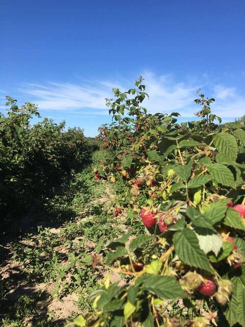

Маравілла це рослина потужна і сильноросла, середня висота пагонів близько 2-х метрів.
Пагони потужні, вкриті невеликими фіолетовими шипами, ближче до осені і самі пагони забарвлюються в червонувато-фіолетовий колір.
Ягоди Маравілли великі, конусоподібні, всі одного розміру та щільні.
Забарвлені в яскраво червоний колір.

Tип плодоношення: ремонтантний
Період дозрівання: середньоранній — починає плодоносити з кінця липня – початку серпня і до заморозків.
Кущ: потужний, прямостоячий, висотою 1,8–2 м, формує мало кореневих нащадків.
Пагони: середньо шипуваті, щільні, добре тримають вагу плодів.
Ягоди: великі (7–10 г), видовжено-конічні, темно-червоні, блискучі, щільні.
Смак: солодкий з легкою кислинкою, приємний, але без вираженого малинового аромату.
Урожайність: висока — до 20–25 т/га в промислових умовах.
Стійкість до хвороб: висока, особливо до сірої гнилі (ботритісу).
Морозостійкість: середня — до -18…-20 °C, потребує укриття в холодних регіонах.